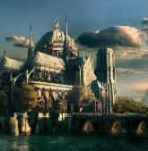

Псковский объединенный музей-заповедник
Главная страница
Контакты
Сайт музея

Название витрины
Краткое описание витрины С другой стороны рамки и место обучения кадров способствует подготовки и реализации модели